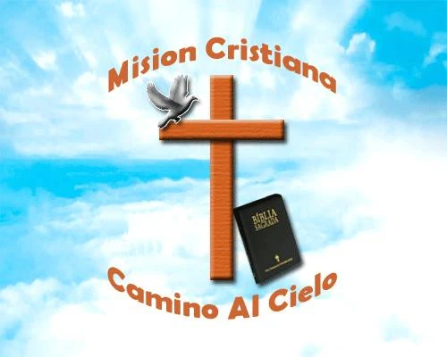

01
Primer semestre de 2009
La invitación
Varios hermanos de Guayaquil invitaron al pastor Luis Sarmiento a abrir una nueva obra en la ciudad. La propuesta dio inicio a un periodo de búsqueda y oración.

Misión CristianaCamino al CieloDesde 2009
Lo que comenzó como una invitación y meses de oración se convirtió en una congregación dedicada a anunciar a Cristo, formar familias y servir a Guayaquil.
Línea de tiempo
Cada hito representa una decisión de fe y la fidelidad de Dios acompañando a su iglesia.
Varios hermanos de Guayaquil invitaron al pastor Luis Sarmiento a abrir una nueva obra en la ciudad. La propuesta dio inicio a un periodo de búsqueda y oración.
Después de consultar a Dios y conversar con su familia, todos confirmaron de manera unánime el llamado para comenzar una iglesia en Guayaquil, Ecuador.
El pastor Sarmiento había dirigido la iglesia Camino al Cielo en Hackensack, Nueva Jersey, hasta julio de 2009. En agosto viajó a Ecuador y, junto con un grupo de hermanos, alquiló un local en la calle 36 y Colombia.
Treinta personas participaron en la primera reunión. Al coincidir con el primer domingo del mes, la naciente congregación también celebró su primera Santa Cena.
El primer local pronto quedó pequeño. La iglesia se trasladó a la calle 35 y Colombia, donde continuó creciendo, adorando y sirviendo a la comunidad.
Camino al Cielo sigue siendo una familia de fe para niños, jóvenes y adultos: una familia unida, una iglesia unida.
Sé parte de la historia